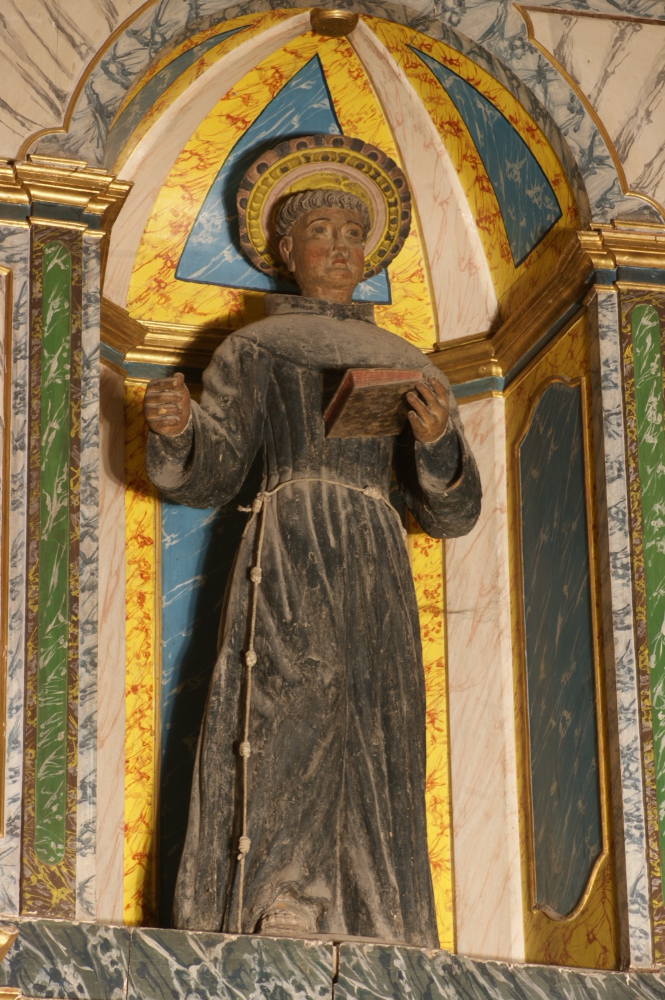

Sant Antoni de Pàdua (1195-1231), conegut popularment a Mallorca com sant Antoni dels Albercocs, nasqué a Lisboa, motiu pel qual també se’l coneix com sant Antoni de Lisboa. Frare franciscà, professor de teologia i gran predicador, és famós pels molts miracles que se li atribueixen. La seva popularitat i fama de miracler eren tan grans que va ser canonitzat menys d’un any després de la seva mort, fet que el converteix en el segon sant que més ràpidament ha estat canonitzat en la història de l’Església Catòlica.
En aquesta escultura del s. XVIII se’l representa amb l’hàbit franciscà, de color marró i cenyit amb un cordó amb nusos. Amb la mà esquerra sosté un llibre, que simbolitza la seva faceta de teòleg i predicador. L’objecte que originalment duia a la mà dreta s’ha perdut.